MAGTrans Systems Pvt Ltd, in partnership with DexinMag, delivers advanced magnetic measurement solutions that enable EV OEM's, battery pack integrators, and Tier-1 suppliers to control magnetic effects, improve production consistency and build safer, more reliable electric vehicles.
Explore SolutionsElectric vehicles operate with high currents, fast-switching power electronics, and compact battery systems, magnetic behavior directly impacts BMS accuracy, EMI/EMC compliance, safety, and reliability. From battery pack current sensor validation to magnetic material characterization in motors and power electronics, magnetic characterization is essential to ensure accurate sensing, controlled interference, and dependable EV performance. To address these critical requirements, we present below a selection of our standard magnetic measurement solutions for EV applications.
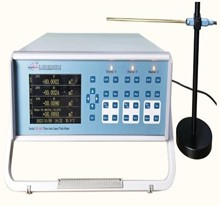
Gauss Meter Measure AC/DC magnetic field strength using high-sensitivity Hall-effect probes.
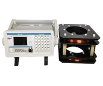
Flux Meter Measures total magnetic flux by integrating induced voltage from sensing coils.
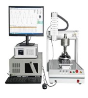
Magnetic Field Mapper Measure 2D/3D magnetic field distribution using calibrated Hall probes and positioning systems.
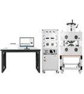
BH Curve & Core Performance Validation System Characterize magnetic materials by measuring B-H curves, hysteresis, coercivity and permeability.
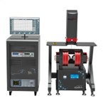
Vibrating Sample Magnetometer Measures magnetic moment by detecting induced voltage from a vibrating magnetized sample.
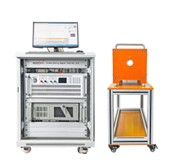
Coercivity & Soft Magnetic Property Testers: Quick, non-destructive measurement of coercive force and soft magnetic response.
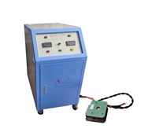
Pulse magnetic Test develops Permanent magnetic materials (Sm-Co-Pr, Nd-Fe-B, Sr-Ba), magnetic tape & Al-Ni-Co are magnetized with short duration using Pulsed magnetizer.
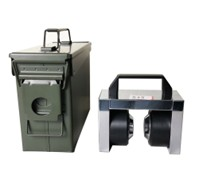
Fixed Magnetization Test: Materials are magnetized permanently under constant magnetic field with fixed air gap. It performes good rigidity and stable magnetic field.
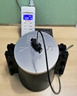
Arrangement of Magnets Test: Halbach Array Magnets are arranged to one side of concentrate magnetic field strength through precise rotation of magnetic orientation which produces higher field strength without increasing magnet size and Improves efficiency in devices that need directed magnetic force.
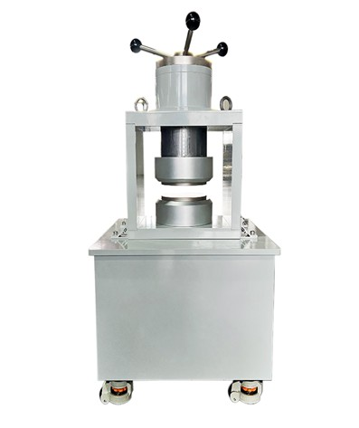
Adjustable Magnetization Test: Permanent magnets are produced by varying magnetic field through adjusting airgap distance between two poles of magnets. The magnetic field is weakened when distance between two poles are increased.
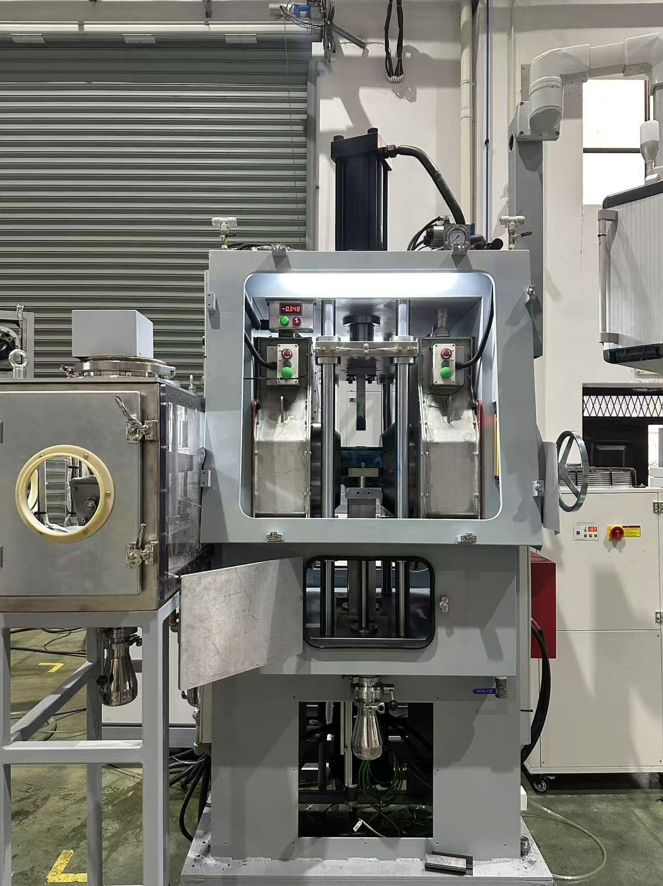
Magnetic field Press Test: Simultaneous controlled compaction and magnetization using hydrulic press and electromagents. REPM powder materials are pressed and molded under the orientation of magnetic field. It is designed for the production of green compact NdFeB permanent magnetic powders.
Modular expansion with additional instruments is available.
MAGTRANS Systems Private Limited | Srinilayam, Street No.1, Himayatnagar, Hyderabad‑ 500029
Email: sales@magtrans.in | Web: www.magtrans.in | Phone: +91-93921-23094